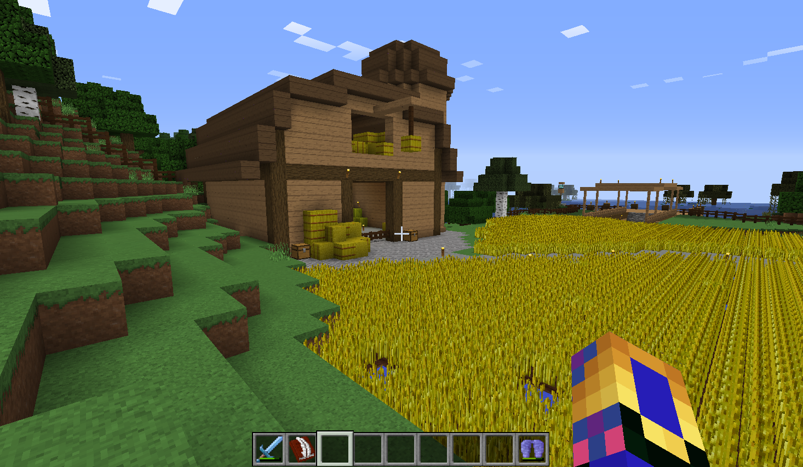

Server Rules [Please Read Completely]
Posted on July 15, 2016 by JMCNation
Welcome to the Equestrian Server! Before you start your adventure into the world of the Equestrian Server we ask that you read to these important rules that will decided if you get to keep playing for be removed from play.
Disclaimer: These rules can change without warning, so by accepting these rules you are also accepting any changes in the future.
Cheating
Cheating or any use of hack clients will result in a permanent ban from the server. Prismic Edge does not support the use of tactics to get an unfair advantage over players through the use of cheating and hack tools and because of this we do not allow them.
If you have cheats or hacks on your Minecraft client right now we ask that before you play on Equestrian Server you disable them. There is very little room for pleading a cause of ban for cheating.
Trolling and Griefing
Trolling and Griefing are not allowed on this server. Harming other players things for fun or stealing from others without permission are all not allowed. The punishment for doing these things can range from 2-5 days of suspension from play up to a permanent ban.
There is a very large range of things that can be done that a player may consider trolling or griefing. Because of this if you feel that this has happened to you, you can give a description of the problem and people linked and submit it in game for review. A good rule of thumb is if you would not like it done to you don't to it to others.
Pranking
Pranking is allowed in moderation. Everyone has heard of pranks and everyone has probably done one to a friend. Pranking others is allowed, but what you do to others does have to follow the rules. Little edits to property or playful jokes on others are welcome.
However if you feel someone has gone overboard with a prank and you feel it is more of trolling or griefing than pranking you can report it for help. Punishment for pranking is the same for trolling and greifing. 2-5 days of supension from play up to a permanent ban. "It's just a prank" is not always just a little prank so keep it clean out there.
Language
Equestrian Server is against the use of negative language like swearing, bullying, and profanity. Please keep conversations clean and rated PG.
If you see people talking like this or you are being bullied report it so act can be taken. Punishment ranges from warnings to 1 day-5 days suspension or at the worst level ban.
Reporting
This tool is to be a friend to those that need it and a way for you to get help. Do not abuse the privilege of reporting or you could lose it.
Reporting can be done in the legal office at spawn.
Positivity
We ask that everyone work to be kind to each other and help others when it is needed. Most important of all we hope that your experience on this server is fun, and that you want to return. If you are not enjoying your time let is know so we can work to make it better.
Updates
Updates will come when needed or when features are completed. Reporting bugs will help make updates more productive, so keep us informed if you find bugs.
JMCNation
--------------------------------------------------------------------------------------------------------------------------------------------------------